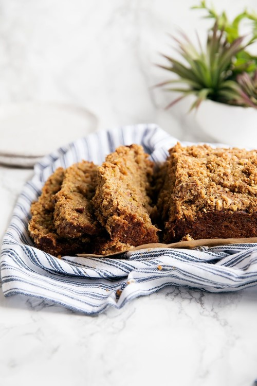

Cardamom Pistachio Zucchini Bread

Ingredients
For The Zucchini Bread
- 1/2 cup coconut oil
- 1 cup cane sugar
- 2 large eggs, room temperature
- 1 teaspoon vanilla extract
- 4 ounces crushed pineapple, drained
- 2 cups grated zucchini
- 2 1/4 cups all-purpose flour
- 1 1/2 teaspoons baking soda
- 3/4 teaspoon cinnamon
- 1/2 teaspoon fresh ground cardamom
- 1/4 teaspoon nutmeg
- 1/2 teaspoon salt
For the Cardamon Pistachio Steusel
- ½ cup pistachios
- 2 teaspoons fresh ground cardamom
- ⅓ cup all purpose flour
- ½ cup brown sugar
- ¼ cup butter, cold and cut into small cubes
Instructions
- Preheat oven to 350°F. Grease or line a standard sized loaf pan with parchment paper. Set aside.
- In a large bowl, beat the oil and sugar for 1 minute. Add in the eggs and vanilla extract, beating for an additional minute. Stir in pineapple and zucchini.
- In a separate bowl, combine the flour, baking soda, cinnamon, ground cardamom, nutmeg, and salt, whisking to combine. Fold into wet ingredients.
- To make the streusel, place the pistachios, cardamom, flour, and brown sugar in a food processor and pulse until the pistachios look well chopped. Pulse in the butter until just combined.
- Pour half of the batter into the pan, then sprinkle with half of the streusel. You’ll want to squeeze the streusel into your hands, making it dense like wet sand, then sprinkle it over the batter. Pour in the rest of the batter, then top with remaining streusel.
- Bake for 50 minutes, or until a knife inserted in the center comes out clean. Allow to cool slightly before removing from pan.